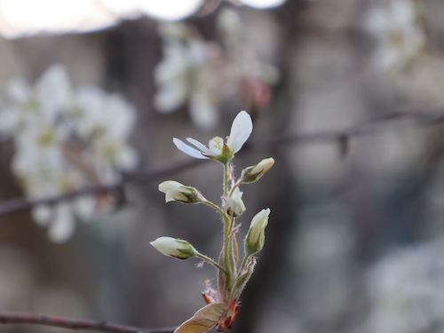
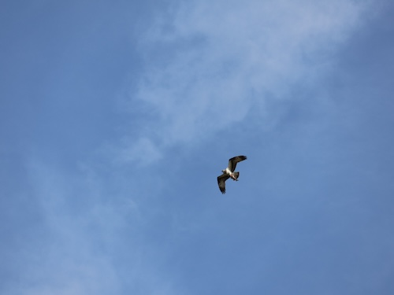
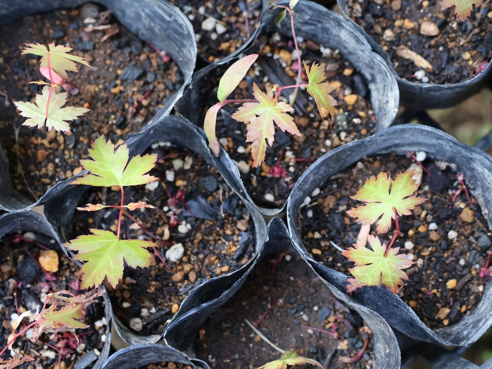
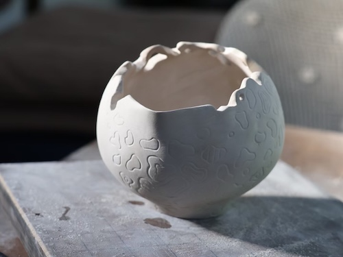

01
自然環境カウンセリング
随時自然界を知るための講座を開催しています。 巻末メールにてお問い合わせください。

私たちは、人の身体も"自然界"だということを学びました。
そして"自然界"には"しくみ"があるということを。
そのしくみは、地球も人間も同じだということを
みなさんに知って頂くために発信しています。
そのしくみを一人一人が体現するということを軸にしています。
これは自分を活かすということであり、
今崩壊に向かっている自然界にとって、希望の光となります。
自分のエネルギーを自然界と同じエネルギーに成長させて、
環境再生の道を開き、また、身近なものづくりにも繋げていきます。
例えばそれを使った人が温かさを感じ、心を思い出し、自然界と繋がっていくように。
そして、心と身体が喜ぶことは、自然界の声を聞くことと同じであることを
一人一人が体感出来るような成長を、共にしていくことを目的としています。
地球とこの身体に寄り添って生きていくエネルギーを、
未来に繋げていきたいと考えています。
自然科学を超えた真実を受け継いで、未来に繋ぐ環境づくりを目指しています。

随時自然界を知るための講座を開催しています。 巻末メールにてお問い合わせください。

こぼれ種から自然に出た実生や、自家採取の種からの苗づくり。 今年は自然界がお休みなので、苗づくりもお休み。

使って温かさが感じられるようなものづくりを目指しています。

心地よい日々に寄り添うもの、また、楽しくなるものをコンセプトにしています。
販売可能なものは、随時掲載していきます。
活動内容については、お気軽にメールでお問い合わせください。
随時 自然界を知るための講座を開催しています
メールにてお問い合わせください
MAIL: yaezuki1818@icloud.com